승강기산업기사 (2014-09-20 기출문제)
1과목: 승강기개론
1. 속도 240m/min 이상의 엘리베이터에는 반드시 설치되어야 하는 안전장치로 카의 비상정지장치가 작동 시 이 장치에 의해 균형추, 와이어로프 등이 관성에 의해 튀어 오르지 못하도록 하는 장치는?(관련 규정 개정전 문제로 여기서는 기존 정답인 1번을 누르면 정답 처리됩니다. 자세한 내용은 해설을 참고하세요.)
- 록 다운 정지장치
- 종단층 강제 감속장치
- 도어 안전장치
- 슬로다운 스위치
(정답률: 87%)

2. 한 건물에 정격속도 30m/min인 에스컬레이터 1200형 1대, 800형 2대가 설치되어 있다. 시간당 총 수송능력은?(관련 규정 개정전 문제로 여기서는 기존 정답인 2번을 누르면 정답 처리됩니다. 자세한 내용은 해설을 참고하세요.)
- 15000명/시간
- 21000명/시간
- 24000명/시간
- 30000명/시간
(정답률: 81%)
3. 로프 소선의 파단이 1개소 특정의 꼬임에 집중되어 있는 경우, 소선의 파단 총수가 1꼬임 피치 내에서 파단수는 몇 개 이하이어야 적합한가?
- 6꼬임 와이어로프이면 18 이하
- 6꼬임 와이어로프이면 24 이하
- 8꼬임 와이어로프이면 16 이하
- 8꼬임 와이어로프이면 24 이하
(정답률: 66%)
4. 엘리베이터 계실에 설치하지 않아도 되는 것은?
- 시건장치
- 조명설비
- 환기장치
- 방음설비
(정답률: 77%)
5. 비상용 엘리베이터의 구조를 설명한 것 중 틀린 것은?
- 기계실은 전용승가로 이외의 부분과 방화구획이 되어 있어야 한다.
- 카 내에는 중앙관리실 또는 경비실 등과 항상 연락할 수 있는 통화장치를 설치하여야 한다.
- 엘리베이터의 운행속도는 90m/mim 이상으로 하여야 한다.
- 카는 반드시 모든 승강장의 출입구마다 정지할 수 있어야 한다.
(정답률: 88%)
6. 엘리베이터에 사용되는 와이어로프의 종류 중 파간강도가 가장 작은 것은?
- A종
- B종
- E종
- G종
(정답률: 65%)
7. 승강기의 주요 안전장치 중 과부하 감지장치의 용도가 아닌 것은?
- 엘리베이터의 전기적 제어용
- 군관리 제어용
- 과 하중 경보용
- 정전 시 구출 운전용
(정답률: 73%)
8. 완충기의 최소행정에 가장 크게 영향을 미치는 것은?
- 기계실 높이
- 정격하중
- 정격속도
- 행정거리
(정답률: 71%)
9. 승객용 엘리베이터에 있어서 카 바닥(Platform)과 카 틀(Car Frame)의 안전율은 얼마 이상으로 하여야 하는가?
- 7.5
- 8.0
- 8.5
- 10
(정답률: 60%)
10. 유압식 엘리베이터에서 유압장치의 보수, 점검, 수리 등을 할 때 주로 사용하는 장치는?
- 스톱밸브
- 블리드오프
- 라인필터
- 스트레이너
(정답률: 86%)
11. 완충기의 적용범위에 대한 설명 중 올바른 것은?
- 스프링 완충기는 정격속도 90m/min 이하에 적용
- 스프링 완충기는 정격속도 90m/min 초과에 적용
- 유입 완충기는 정격속도 60m/min 이하에 적용
- 유입 완충기는 정격속도 60m/min 초과에 적용
(정답률: 62%)
12. 유압식 엘리베이터의 작동유의 온도의 허용 범위는 몇 도(℃)인가?
- -10~40
- 0~50
- 5~60
- 10~70
(정답률: 78%)
13. 장애인용 엘리베이터의 승강장 바닥과 승강기 바닥의 틈을 몇 cm이하인가?
- 2.0
- 2.5
- 3.0
- 3.5
(정답률: 71%)
14. 교류 2단 속도제어 방식에서 크리프 시간이란 무엇인가?
- 저속 주행시간
- 고속 주행시간
- 속도 변환시간
- 가속 및 감속시간
(정답률: 68%)
15. 유압식 승강기의 종류에 속하지 않는 것은?
- 직접식
- 간접식
- 팬터그래프식
- 스크류식
(정답률: 84%)
16. 엘리베이터를 속도에 따라 분류할 때 일반적으로 초고속 엘리베이터의 속도 영역은?
- 180m/min 이상
- 240m/min 이상
- 270m/min 이상
- 360m/min 이상
(정답률: 76%)
17. 에스컬레이터가 하강방향으로 역회전되는 것을 방지하기 위한 안전장치는?
- 구동체인 안전장치
- 스텝체인 안전장치
- 핸드레일 안전장치
- 비상정지 스위치
(정답률: 74%)
18. 트랙션 방식 엘리베이터의 주로프 가닥수는 몇 가닥 이상인가?
- 1가닥 이상
- 2가닥 이상
- 3가닥 이상
- 4가닥 이상
(정답률: 68%)
19. 유도전동기에 인가되는 주파수를 동시에 변환시켜 직류전동기와 동등한 제어성능을 얻을 수 있는 방식은?
- 인버터제어
- 교류일반속도제어
- 교류귀환전압제어
- 워드레오나드제어
(정답률: 65%)
20. ‘엘리베이터 안전장치 중 엘리베이터가 정격속도를 현저히 초과하여 과속으로 운전될 때 전원을 차단시켜 엘리베이터 운행을 정지시키는 안전장치는?
- 강제감속 스위치
- 슬로우다운 스위치
- 리미트 스위치
- 조속기
(정답률: 73%)
2과목: 승강기설계
21. 즉시작동형 비상정지장치가 설치된 엘리베이터에서 카의 주행속도가 45m/min에서 비상정지장치가 작동하여 카가 정지하기까지의 거리가 3.75cm라고 하면 감속도는 몇 m/sec2인가?
- 3.75
- 7.5
- 13
- 15
(정답률: 56%)
22. 엘리베이터 설비계획 상 주요 고려 사항이 아닌 것은?
- 교통량 계산결과 그 빌딩의 교통수요에 적합한 충분한 대수일 것
- 이용자의 대기시간이 건물용도에 적합한 허용치 이하가 되도록 고려할 것
- 초고층 빌딩의 경우 서비층의 분할보다는 엘리베이터의 속도를 우선 고려할 것
- 여러 대의 승강기를 설치할 경우 가능한 건물 가운데로 배치할 것
(정답률: 75%)
23. 전기식 엘리베이터에서 권상로프의 지름이 12mm인 것을 4본 사용할 경우 권상도르래의 최소지름은 몇 mm인가?
- 400
- 480
- 560
- 640
(정답률: 79%)
24. 유압엘리베이터의 릴리프밸브에 대한 설명 중 옳은 것은?
- 일정한 유량을 흐르게 해주는 밸브이다.
- 압력 조정밸브의 일종으로 유압회로 내의 압력이 이상 상승하는 것을 방지하는 밸브이다.
- 한쪽 방향으로만 흐름을 허용하는 밸브이다.
- 어느 쪽이든 흐름을 막아주는 밸브이다.
(정답률: 80%)
25. 조명설비의 설정조건에 대한 내용으로 틀린 것은?
- 기계실의 조명 개폐기는 출입구 가까운 곳에 설치하여야 한다.
- 카 내에는 정전 시에 승객이 불안감을 느끼지 않도록 예비 조명장치를 갖추어야 한다.
- 비상용 승강기의 조명기구는 침수되지 않는 위치에 설치되어야 한다.
- 조명 전원은 동력전원으로부터 인출하여 사용하여야 한다.
(정답률: 82%)
26. 가이드 레일의 강도 계산 시 고려되지 않는 것은?
- 가이드 레일의 단면 계수
- 가이드 레일 단면의 조도
- 레일 브라켓의 설치 간격
- 카의 총 중량
(정답률: 77%)
27. 교류엘리베이터 변압기 설계기준으로서 가속전류에 대한 전압강하율(%)은?
- 22
- 15
- 10
- 6
(정답률: 52%)
28. 엘리베이터 카틀 및 카바닥의 설계에 관하여 틀린 것은?
- 카바닥과 카틀의 구조부재의 경사진 플랜지에 사용되는 너트는 스프링 와셔에 얹혀야 한다.
- 현수도르래가 복수인 경우 도르래사이의 로프로 인하여 발생되는 압축력을 고려하여야 한다.
- 카틀의 부재와 카바닥사이의 연결부위는 리벳이나 볼트로 체결 또는 용접을 한다.
- 인장, 비틀림, 휨을 받는 부품에는 주철은 사용하지 않아야 한다.
(정답률: 59%)
29. 정역학적인 힘의 평형식만으로 미지의 지지반력을 구할 수 있는 정정보가 아닌 것은?
- 외팔보(cantilever beam)
- 단순보(simple beam)
- 고정보(fixed beam)
- 내다지보(overhanging beam)
(정답률: 53%)
30. 유도전동기의 제동방법 중 1차권선 3단자 중 임의의 2단자의 접속을 바꾸어서 제동하는 방법은?
- 회색제동
- 발전제동
- 역전제동
- 단상제동
(정답률: 71%)
31. 동기속도가 1500rpm, 전부하 회전수가 1410rpm인 전동기의 슬립(%)은?
- 5
- 6
- 10
- 12
(정답률: 65%)
32. 승강장문의 유효 출입구 폭은 카 출입구의 폭 이상으로 하되, 양쪽 측면 모두 카 출입구 측면의 폭보다 몇 mm를 초과하지 않아야 하는가?
- 20
- 35
- 50
- 70
(정답률: 48%)
33. 직류발전기의 출력단을 직접 직류전동기의 회전자에 연결시키고, 발전기의 계자전류를 조정하여 발전전압을 엘리베이터의 속도에 대응하여 연속적으로 공급시키는 엘리베이터의 제어방식은?
- 워드레오나드방식
- 정지레오나드방식
- 2단속도제어방식
- VVVF제어방식
(정답률: 67%)
34. 승강기 전기설비의 공칭 회로전압이 500V 이하인 경우의 전연저항은 몇 ㏁ 이상이어야 하는가?
- 0.5
- 0.4
- 0.3
- 0.2
(정답률: 69%)
35. 교류 엘리베이터용 동력전원설비 용량을 산정하는데 필요한 요소가 아닌 것은?
- 카내 조명
- 가속전류
- 전압강하
- 부등율
(정답률: 63%)
36. 비상용엘리베이터의 운행속도는 몇 m/min 이상으로 하여야 하는가?
- 30
- 45
- 60
- 90
(정답률: 77%)
37. 권상기에 대한 설명으로 옳은 것은?
- 권상기 도르래의 지름은 로프 지름의 20배 이상으로 하여야 한다.
- 권상기 도르래와 로프의 권부각이 클수록 미끄러지기 쉽다.
- 승객용 엘리베이터의 브레이크 장치는 정격하중의 125% 하중에서 하강 시 안전하게 감속, 정지하여야 한다.
- 도르래의 로프홈은 U홈을 사용하는 것이 마찰계수가 커서 유리하다.
(정답률: 75%)
38. 유압 엘리베이터에 있어서 작동유의 압력맥동을 흡수하여 진동ㆍ소음을 감소시키기 위하여 사용되는 것은?
- 스톱밸브
- 사이렌서
- 필터
- 역류 제지밸브
(정답률: 81%)
39. 아래 그림의 복활차에서 W=900kgf일 때, 당기는 힘 P는 몇 kgf인가?
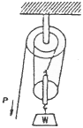
- 300
- 450
- 900
- 1800
(정답률: 55%)
40. VVVF 제어방식으로 속도를 제어할 수 있는 전동기를 보기에서 모두 고르면?
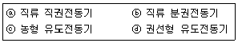
- ⓐ
- ⓐ, ⓑ
- ⓒ
- ⓒ. ⓓ
(정답률: 67%)
3과목: 일반기계공학
41. 유량 6m3/min, 손실 양정 6m, 실양정 30m인 급수펌프를 1750rpm으로 운전할 때 소요 동력은 약 몇 kW인가? (단, 펌프 효율은 0.88이다.)
- 20
- 30
- 35
- 40
(정답률: 24%)
42. 구리의 일반적인 성질에 관한 설명으로 옳지 않은 것은?
- 전기 및 열 전도도가 높다.
- 용융점 이외는 변태점이 없다.
- 연하고 전연성이 커서 가공하기 어렵다.
- 철강재료에 비하여 내식성이 커서 공기 중에서는 거의 부식되지 않는다.
(정답률: 73%)
43. 주로 굽힘 작용을 받으면서 회전력은 거의 전달하지 않는 축으로 가장 적당한 것은?
- 차축
- 프로펠러 샤프트
- 기어축
- 공작기계의 주축
(정답률: 67%)
44. 드릴링 머신의 안전에 관한 설명으로 옳지 않은 것은?
- 장갑을 끼고 작업하지 않는다.
- 얇은 가공물은 손으로 잡고 드릴링 한다.
- 구멍 뚫기가 끝날 무렵은 이송을 천천히 한다.
- 얇은 판의 구멍 뚫기에는 보조 나무판을 사용하는 것이 좋다.
(정답률: 75%)
45. V 벨트 1가닥이 전달할 수 있는 마력이 4kW이고, 부하보정계수(과부하계수)가 0.9, 접촉각 수정계수는 0.95일 때, 3가닥이 전달할 수 있는 동력은 약 몇 kW인가?
- 9.49
- 10.26
- 16.45
- 19.13
(정답률: 52%)
46. 코일스프링의 소선지름(d)을 스프링의 처짐량 식에서 구하고자 할 때, 다음 중 반드시 필요한 요소가 아닌 것은?
- 스프링의 길이(L)
- 축방향 최대 하중(P)
- 소선의 전단탄성계수(G)
- 코일스프링 전체의 평균지름(D)
(정답률: 60%)
47. 암나사를 수기가공으로 작업을 할 때 사용되는 공구는?
- 탭(tap)
- 리머(reamer)
- 다이스(dies)
- 스크레이퍼(scraper)
(정답률: 66%)
48. 다음 중 일반 구조용 압연강재의 특성에 관한 설명으로 옳은 것은?
- 열간압연으로 만들어진 강판, 강대, 평강, 형강, 봉강 등의 강재이다.
- P와 S가 비교적 많이 함유되어 있기 때문에 인성, 특히 저온 인성이 높다.
- 고장력강으로 분류되며 인장강도는 대략 100MPa이며 연성은 25%정도이다.
- 기계가공성과 용접성이 뛰어나서 용접 구조용 압연강제와 혼용하여 사용할 수 있다.
(정답률: 56%)
49. 공작물을 단면적 100cm2인 유압실린더로 1분에 2m의 속도로 이송시키기 위해 필요한 유량은 몇 L/mim인가?
- 10
- 20
- 30
- 40
(정답률: 57%)
50. 분사펌프(jet pump)에 관한 설명으로 옳은 것은?
- 일반펌프에 비하여 효율이 높다.
- 부식성 유체 등에는 사용할 수 없다.
- 액체 분류로 유체를 수송할 수 없다.
- 구조에 있어서의 동적부분이 없고 간단하다.
(정답률: 51%)
51. 지름이 2cm인 연강봉에 인장하중 8000N이 작용할 때 변형률은 얼마인가? (단, 연강봉의 종탄성계수(E)는 2.1×106N/cm2이다.)
- 1.12×10-3
- 1.21×10-3
- 1.91×10-3
- 2.47×10-3
(정답률: 47%)
52. 알루미늄 분말, 산화철 분말과 점화제의 혼합반응으로 열을 발생시켜 용접하는 방법은?
- 테르밋 용접
- 일렉트로 슬래그 용접
- 피복 아크 용접
- 불활성 가스 아크 용접
(정답률: 74%)
53. 펌프의 종류 중 회전 펌프의 일종인 것은?
- 차동 펌프
- 단동 펌프
- 복동 펌프
- 기어 펌프
(정답률: 77%)
54. 지름 2cm, 길이 4m인 봉이 축 인장력 400kg을 받아 지름이 0.001mm 줄어들고 길이는 1.⑤mm 늘어났다. 이 재료의 포아송 수는 얼마인가?
- 3.25
- 4.25
- 5.25
- 6.25
(정답률: 38%)
55. 다음 내화물 중 염기성 내화물의 종류가 아닌 것은?
- 크롬질 내화물
- 마그네샤질 내화물
- 돌로마이트질 내화물
- 크롬마그네샤질 내화물
(정답률: 51%)
56. 와셔(washer)를 사용하는 일반적인 경우가 아닌 것은?
- 내압력이 낮은 고무면의 경우
- 너트에 맞지 않는 볼트일 경우
- 볼트 구멍이 볼트의 호칭용 규격보다 클 경우
- 너트와 볼트의 머리 접촉이 경사지거나 접촉면이 고르지 않은 경우
(정답률: 59%)
57. 리벳팅이 끝난 뒤에 리벳머리 주위나 강판의 가장자리를 정으로 때려 그부분을 밀착시켜서 틈을 없애는 작업은?
- 랩핑
- 호닝
- 코킹
- 클러칭
(정답률: 65%)
58. 보 속의 굽힘 응력에 대한 설명으로 옳은 것은?
- 세로탄성계수에 반비례한다.
- 굽힘 곡률반지름에 비례한다.
- 중립면으로부터의 거리에 비례한다.
- 중립면에서 굽힘응력이 최대로 된다.
(정답률: 42%)
59. 다음 공작기계 중 척, 센터, 면판, 돌리개, 심봉, 방진구 등의 부속장치를 사용하는 것은?
- 선반
- 플레이너
- 보링머신
- 밀링머신
(정답률: 68%)
60. 속이 빈 모양의 목형(木型)을 주형 내부에서 지지할 수 있도록 목형에 덧붙여 만든 돌출부를 무엇이라고 하는가?
- 라운딩(rounding)
- 코어 프린트(core print)
- 목형 기울기(draft taper)
- 보정 여유(compensation allowance)
(정답률: 66%)
4과목: 전기제어공학
61. R-L 직렬회로에 100V의 교류 전압을 가했을 때 저항에 걸리는 전압이 80V이었다면 인덕턴스에 유기되는 전압은 몇 V인가?
- 20
- 40
- 60
- 80
(정답률: 53%)
62. 그림과 같은 단위계단함수를 옳게 나타낸 것은?
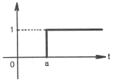
- U(t)
- U(t-a)
- U(a-t)
- U(-a-t)
(정답률: 73%)
63. 부하전류가 100A일 때 900rpm으로 10Nㆍm의 토크를 발생하는 직류직권정동기가 50A의 부하전류로 감소되었을 때 발생하는 토크는 약 몇 Nㆍm인가?
- 2.5
- 3.2
- 4
- 5
(정답률: 25%)
64. 그림과 같이 저항 R1과 R2가 병렬로 접속되어 있다. R1에 흐르는 전류 I1은?
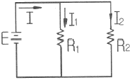
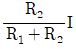
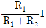
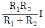
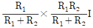
(정답률: 48%)
65. 3상 유도전동기의 2차 저항을 2배로 하면 2배가 되는 것은?
- 토크
- 슬립
- 전류
- 역률
(정답률: 57%)
66. 프로세스 제어의 제어량이 아닌 것은?
- 온도
- 압력
- 농도
- 전류
(정답률: 51%)
67. 시퀀스 제어에 관한 설명 중 옳지 않은 것은?
- 조압 논리회로로도 사용된다.
- 전체시스템의 접점들이 일시에 동작한다.
- 기계적 계전기접점이 사용된다.
- 시간지연요소가 사용된다.
(정답률: 67%)
68. 다음 회로에서 합성 정전용량(uF)은?
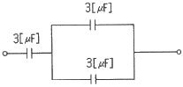
- 1.1
- 2.0
- 2.4
- 3.0
(정답률: 61%)
69. 다음 신호흐름선도와 등가인 블록선도는?
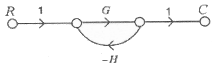
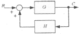
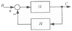
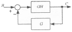
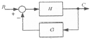
(정답률: 63%)
70. 잔류 편차(off-set)를 발생하는 제어는?
- 미분 제어
- 적분 제어
- 비례 제어
- 비례 적분 미분 제어
(정답률: 58%)
71. 전달함수의 특성에 관한 내용으로 잘못된 것은?
- 전달함수는 선형제어계에서만 정의된다.
- 전달함수는 임펄스응답의 라플라스변환으로 정의된다.
- 전달함수를 구할 때 제어계의 초기값은 “1”로 한다.
- 전달함수는 제어계의 입력과는 관계없다.
(정답률: 66%)
72. 유도전동기의 속도제어에 사용할 수 없는 전력 변환기는?
- 인버터
- 사이클로 컨버터
- 위상제어기
- 정류기
(정답률: 61%)
73. 단상 전파정류로 직류전압 48V를 얻으려면 변압기 2차권선의 상전압 Vs는 몇 V인가? (단, 부하는 무유도저항이고, 정류회로 및 변압기에서의 전압강하는 무시한다.)
- 43
- 53
- 58
- 65
(정답률: 45%)
74. 다음 ()에 들어갈 내용으로 알맞은 것은?
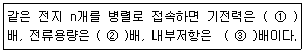
- ① 1, ② 1, ③ 1
- ① 1, ② n, ③ n
- ① 1, ② n, ③ 1/n
- ① n, ② n, ③ 1/n
(정답률: 69%)
75. 그림과 같이 교류의 전압을 직류용 가동코일형 계기를 사용하여 측정하였다. 전압계의 눈금은 몇 [V]인가? (단, 교류전압의 최대값은 Vm이고, 전압계의 내부저항 R의 값은 충분히 크다고 한다.)
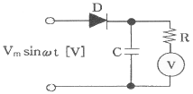
- Vm
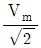
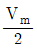
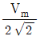
(정답률: 44%)
76. 자동제어계의 분류 중 추치제어에 속하지 않는 것은?
- 비율제어
- 추종제어
- 프로세스제어
- 프로그램제어
(정답률: 41%)
77. 논리식
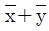
와 같은 식은?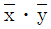
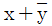
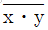
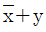
(정답률: 70%)
78. 다음 중 서보기구에 있어서의 제어량은?
- 유량
- 위치
- 주파수
- 전압
(정답률: 69%)
79. 교류회로의 전력 P=VI cosθ에서 cosθ를 무엇이라 하는가?
- 무효율
- 피상율
- 유효율
- 역률
(정답률: 57%)
80. 그림과 같이 논리회로에서 출력 Y는?
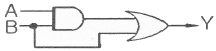
- Y=AB+A
- Y=AB+B
- Y=AB
- Y=A+B
(정답률: 73%)